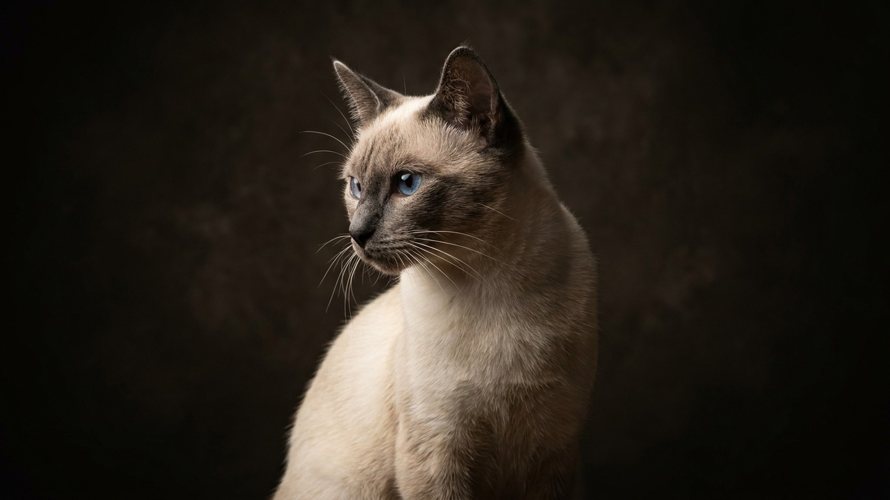

Продавец говорит «сиамский котёнок», а котёнок кругломордый и спокойный — и покупатель в замешательстве. На деле перед ним, скорее всего, тайская кошка: та самая «старая сиамская», какой порода была до того, как заводчики вытянули морду в клин. Тайская — отдельная официальная порода со своим стандартом и характером. Ниже — чем она отличается от современной сиамской, какой у неё нрав и что важно знать до того, как взять котёнка.
🐾 Здоровье питомца под контролем
AI-ветеринар, дневник здоровья и персональные советы для вашего питомца — установите AnimaLife бесплатно.
Обе породы вышли из одного корня — кошек древнего Сиама. В XX веке заводчики повели сиамскую в сторону экстремального типа: узкая клиновидная морда, огромные уши, вытянутое тело. Тайская сохранила исходный, «яблочный» облик.
Тайская кошка — про людей, а не про мебель. Она ходит за хозяином из комнаты в комнату, встречает у двери и активно комментирует происходящее голосом. «Разговорчивость» — фамильная черта, но у тайской она мягче и не такая пронзительная, как у современной сиамской.
Это умная, деятельная кошка: быстро запоминает правила дома, легко учится приносить игрушку и открывать дверцы. Обратная сторона привязанности — тяжело переносит долгое одиночество. Если целыми днями дома никого нет, тайской нужен либо второй питомец, либо предсказуемый ритм и много общения по вечерам.
С шерстью всё просто: короткая, без плотного подшёрстка, почти не сваливается. Достаточно вычёсывания раз в неделю, в период сезонной линьки — чаще. А вот на что уходят силы — это на «занятость» кошки.
Порода в целом крепкая и живёт долго. Как и у всех колор-пойнтов, стоит спокойно наблюдать за состоянием зубов и весом, а любые новые изменения в поведении или аппетите обсуждать со своим ветеринаром на плановом осмотре.
🐾 Первая помощь — всегда под рукой
AnimaLife подскажет, что делать в тревожной ситуации с питомцем ещё до визита к врачу. Откройте в один тап.
🐾 Понравился разбор?
Подпишитесь на канал — каждый день разбираем по одному тревожному симптому у кошек и собак: что в пределах нормы, а когда пора к врачу. Подпишитесь, чтобы не пропустить разбор, который может спасти здоровье вашего питомца.
Тайская — для тех, кто хочет активного, привязчивого и «разговорчивого» компаньона и готов уделять ему внимание. Она отлично уживается с детьми и другими животными, но плохо переносит равнодушие и пустой дом. Если вам нужна тихая самостоятельная кошка «сама по себе» — это не про тайскую. А если хочется питомца-собеседника, который будет частью каждого вашего дня, — лучше кандидата трудно найти.
Материал носит информационный характер и не заменяет очную консультацию ветеринара.